경복궁이란?
Definition of Gyeongbokgung Palace
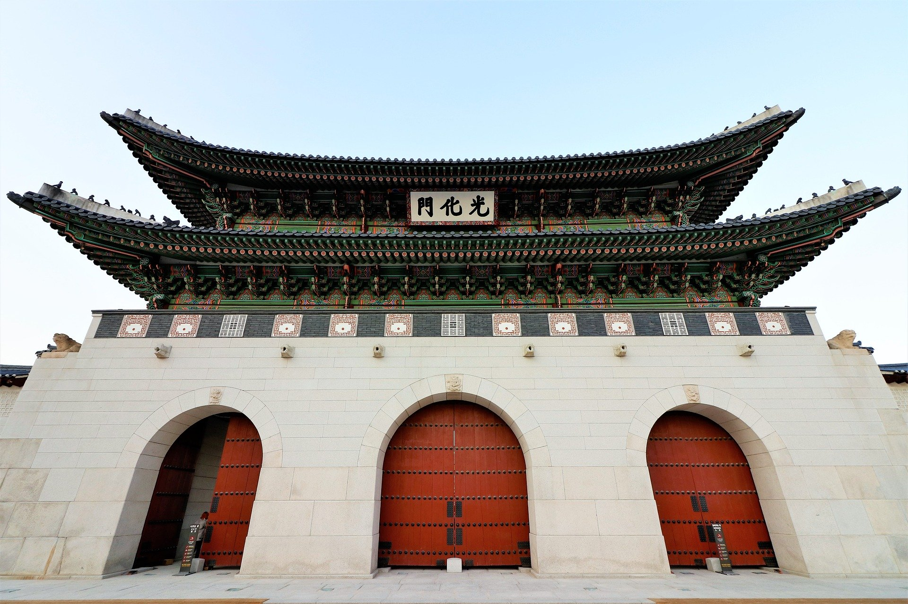
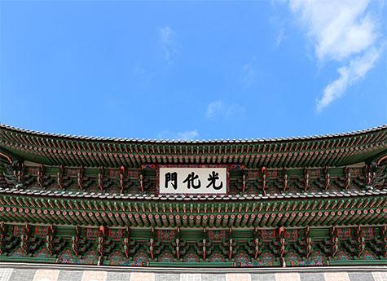
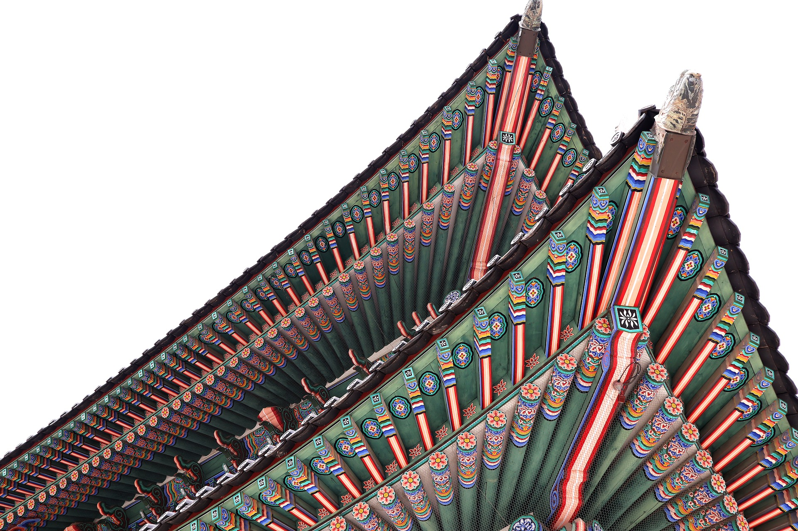
서울특별시 종로구 세종로에 있는,
조선전기에 창건되어 정궁으로 이용된 궁궐. 정궁. 사적.
조선 왕조 제일의 법궁
The first law palace of the Joseon Dynasty
사적 제117호.
북으로 북악산을 기대어 자리 잡았고,
정문인 광화문 앞으로는 넓은 육조거리가 펼쳐져,
왕도인 한양(서울) 도시 계획의 중심이기도하다.
1395년 태조 이성계가 창건하였으나,
1592년 임진 왜란으로 궁내 건물 대부분이 불타 없어졌다.
그러나 근정전과 경회루를 제외한,
많은 전각들이 복권되었고,
창건 때의 위치를 그대로 지키고 있다.
이는 경복궁이 조선왕조 정궁의 면모를
대체적으로나마 확인할 수 있는 중요한 유적임을 의미한다.
경복궁 들여다보기
A peep into Gyeongbokgung Palace
광화문
[光化門]
Gwanghwamun Gate
광화문은 경복궁의 정문을 말한다.
또한 조선의 법궁에 해당하는 궁궐의 정문으로써
다른 궁궐들의 정문과는 달리 돌로 높은 석축을 쌓고,
그 위에 중층구조의 누각을 세워
마치 성곽의 성문과 같은 격식으로 장대하게 지어졌다.
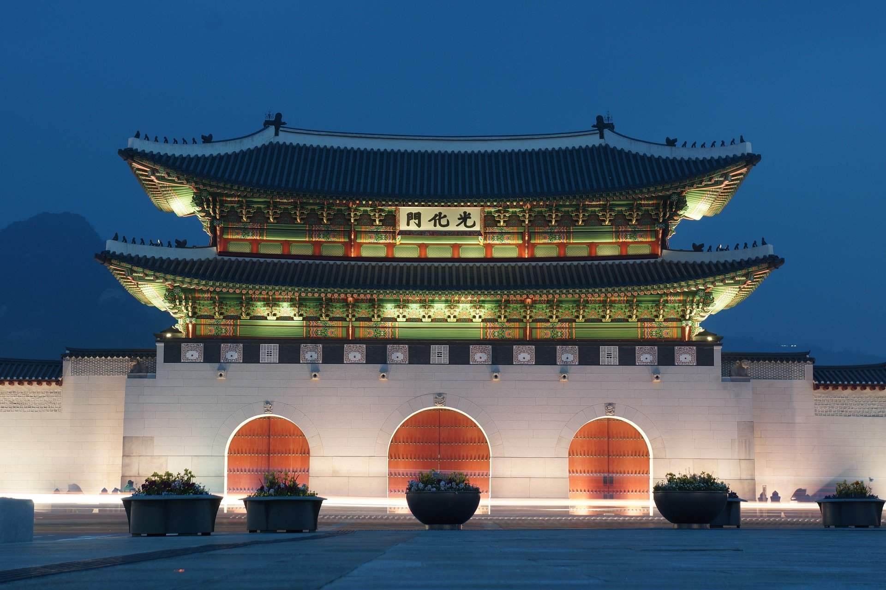
흥례문
[弘禮門]
Heungnyemun Gate
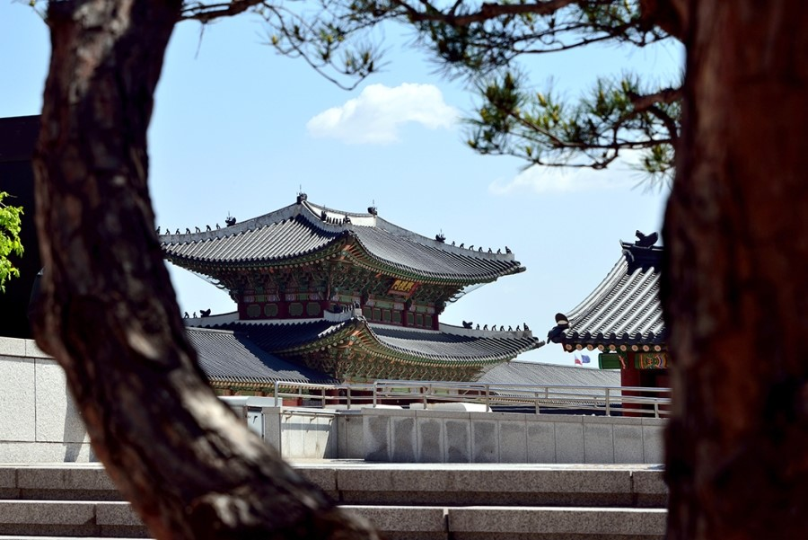
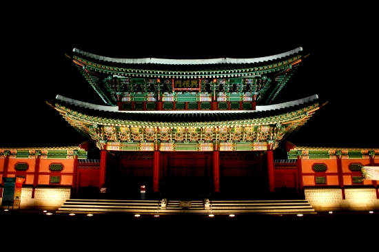
경복궁에 있는 3개의 문 가운데 중문.
창건된 것은 1395년(조선 태조 4)으로,
원래 이름은 '예를 널리 편다'는 뜻의 흥례문이다.
1592년(선조 25), 임진왜란 때 소실되었다가
1867(고종 4), 흥선대원군이 중건하고
이름을 흥례문이라 명했다.
경복궁 4대문
The four gates of Gyeongbokgung Palace
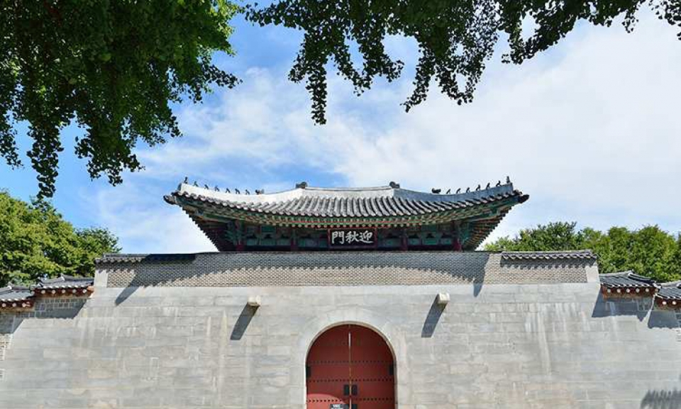
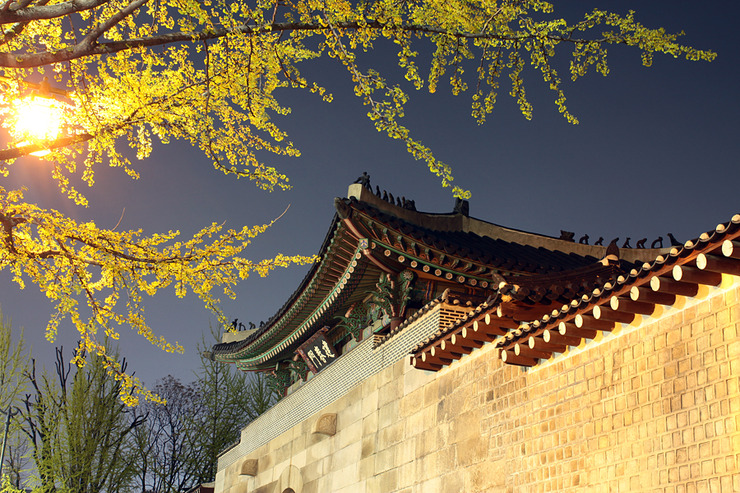
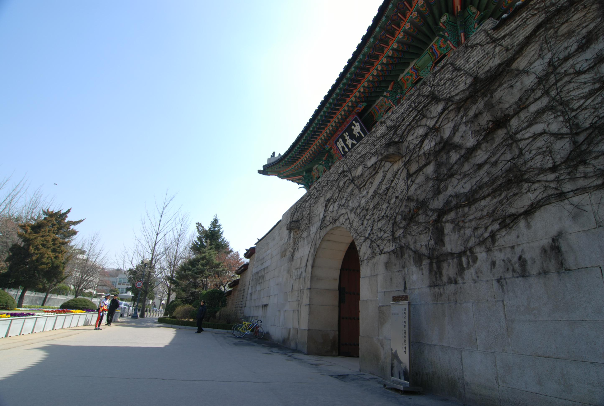
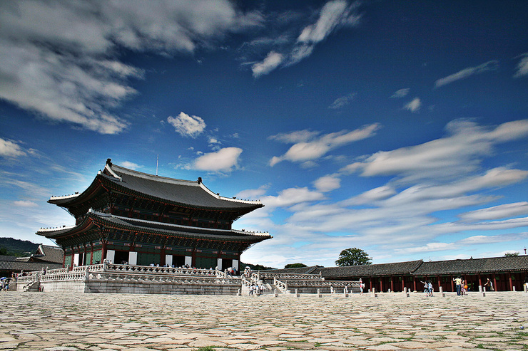
근정전
[勤政殿]
Geunjeongjeon Hall
조선시대 국가의 중대한 의식을 거행하던
궁궐건물. 전각. 국보.
국보 제223호로 팔작기붕의 중층건물이다.
신하들의 조하를 받거나 정령을 반포하는 정전으로,
때로는 사신을 맞아들이기도 하고,
양로연이나 위로연을 베풀기도 하던 곳이다.
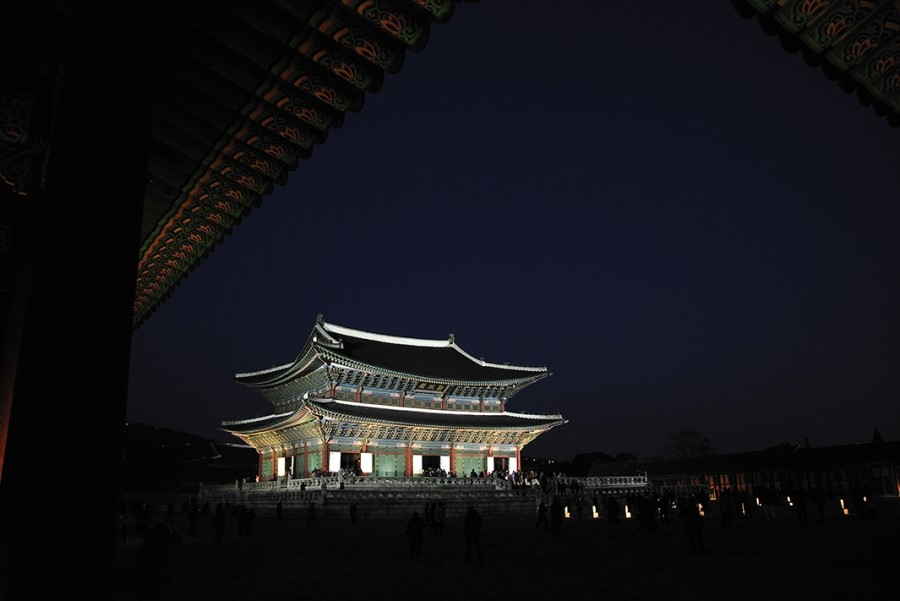
강녕전, 교태전
[康寧殿, 交泰殿]
Gangnyeongjeon, Gyotaejeon
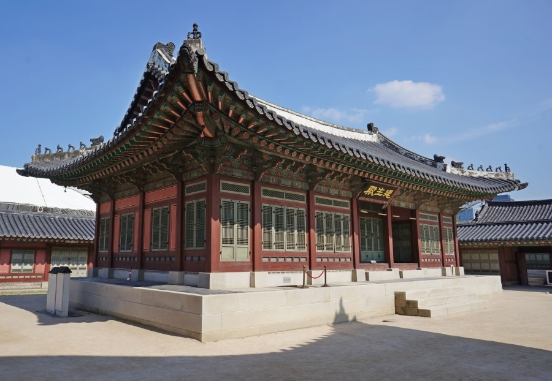
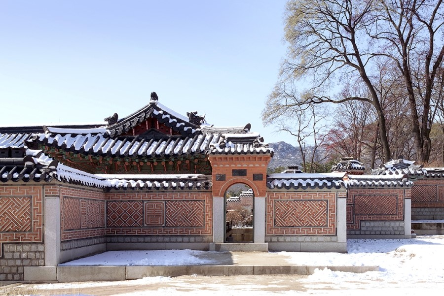
궁궐의 침전영역.
경복궁에는 왕과 왕비의 침전영역이 둘로 구분되어 있다.
하나는 왕의 침전인 강녕전이고,
다른 하나는 왕비의 침전인 교태전이다.
궁궐에서 침전은 왕과 왕비가 일상생활을 하는 곳이며,
내외 종친을 불러 연회를 하는 곳이기도 하다.
경복궁의 편전, 사정전
A war of fire and fire at Gyeongbokgung Palace
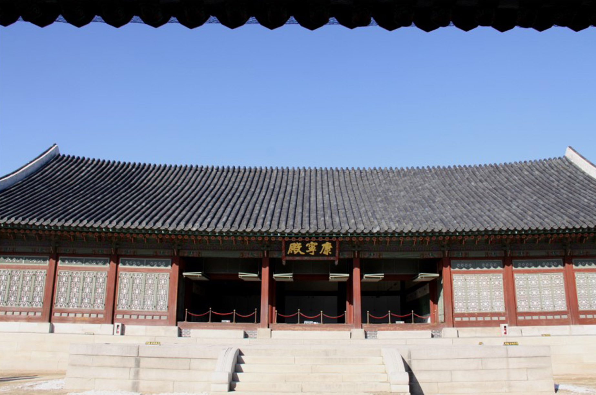
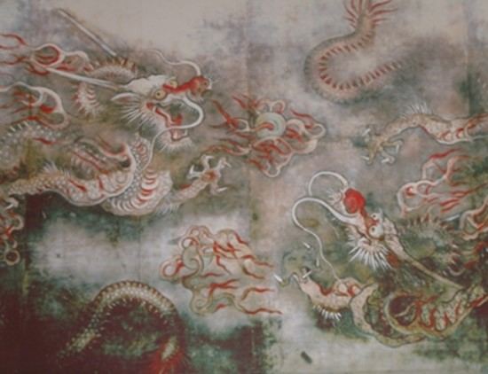
조선시대 임금의 편전으로 이용된
궁궐건물이자 보물을 말한다.
임진왜란때 소실되었다가
1867년 중건되었다.
2012년 3월 2일에 보물 제1759호로 지정되었다.
국왕이 정무를 수행하던 편전으로,
치조의 중요한 공간이었다.
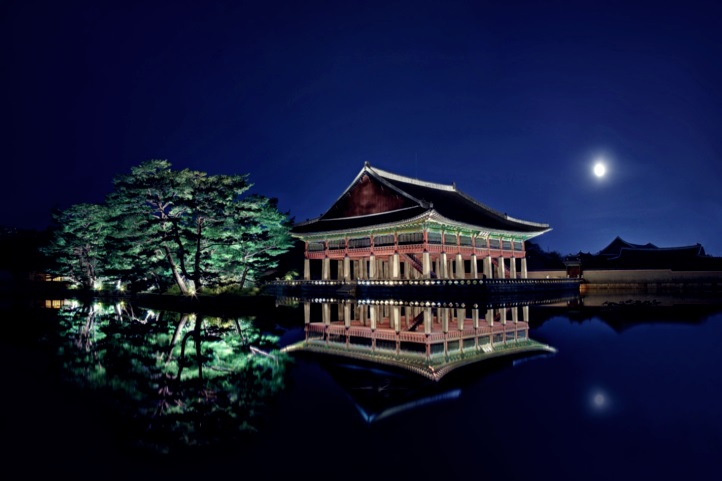
경회루
[慶會樓]
Gyeonghoeru
조선후기 왕과 가족들의 휴식처로 이용된
궁궐건물. 누정. 보물
향원정
[香遠亭]
Hyangwondjeong
조선후기 연회 장소로 이용된
궁궐건물. 누정. 국보.
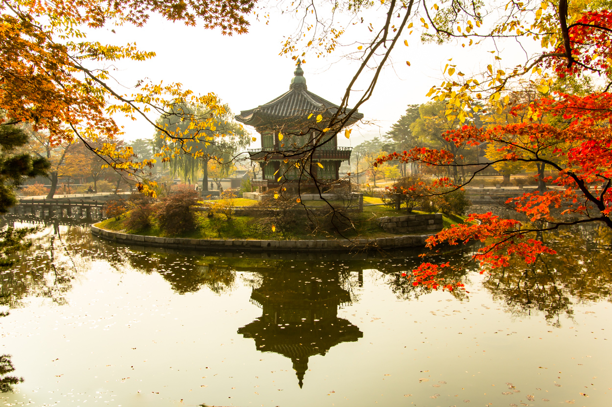
광화문은 경복궁의 정문을 말한다.
또한 조선의 법궁에 해당하는 궁궐의 정문으로써
다른 궁궐들의 정문과는 달리 돌로 높은 석축을 쌓고,
그 위에 중층구조의 누각을 세워
마치 성곽의 성문과 같은 격식으로 장대하게 지어졌다.
흥례문
[弘禮門]
Heungnyemun Gate
경복궁에 있는 3개의 문 가운데 중문.
창건된 것은 1395년(조선 태조 4)으로,
원래 이름은 '예를 널리 편다'는 뜻의 흥례문이다.
1592년(선조 25), 임진왜란 때 소실되었다가
1867(고종 4), 흥선대원군이 중건하고
이름을 흥례문이라 명했다.
경복궁 4대문
The four gates of Gyeongbokgung Palace
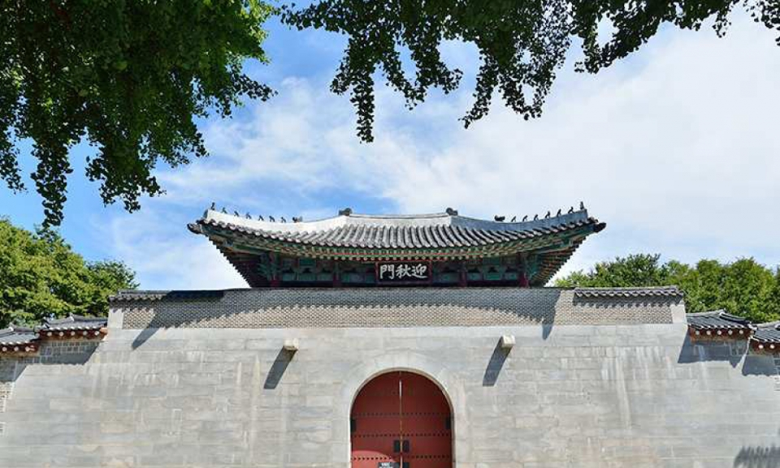
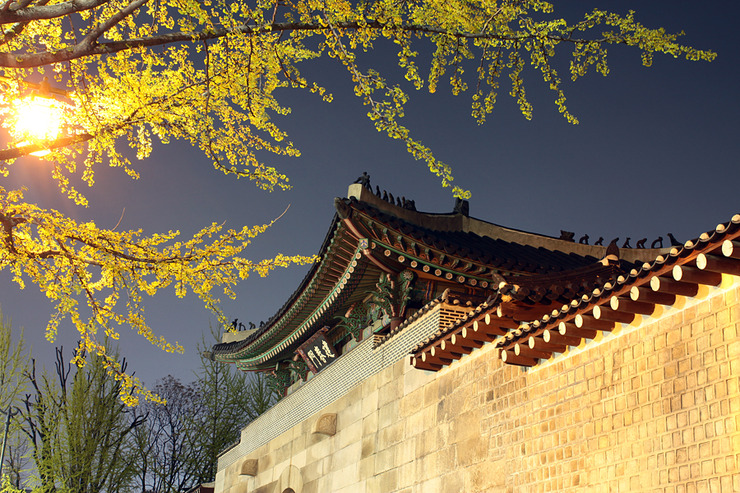
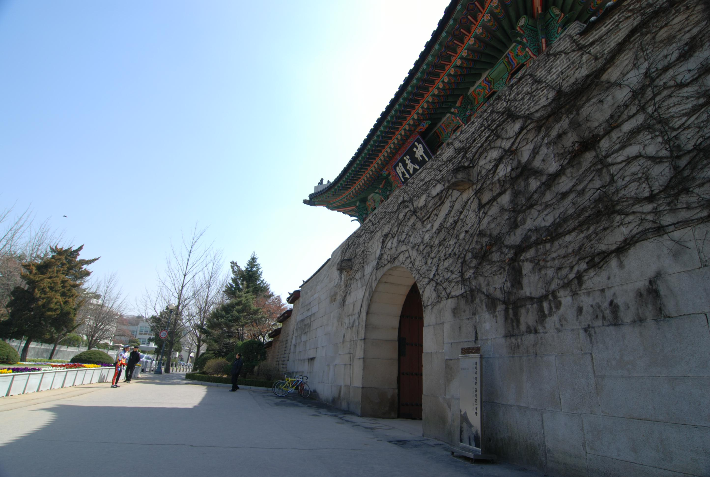
근정전
[勤政殿]
Geunjeongjeon Hall
조선시대 국가의 중대한 의식을 거행하던
궁궐건물. 전각. 국보.
국보 제223호로 팔작기붕의 중층건물이다.
신하들의 조하를 받거나 정령을 반포하는 정전으로,
때로는 사신을 맞아들이기도 하고,
양로연이나 위로연을 베풀기도 하던 곳이다.
강녕전, 교태전
[康寧殿, 交泰殿]
Gangnyeongjeon, Gyotaejeon
궁궐의 침전영역.
경복궁에는 왕과 왕비의 침전영역이 둘로 구분되어 있다.
하나는 왕의 침전인 강녕전이고,
다른 하나는 왕비의 침전인 교태전이다.
궁궐에서 침전은 왕과 왕비가 일상생활을 하는 곳이며,
내외 종친을 불러 연회를 하는 곳이기도 하다.
경복궁의 편전, 사정전
A war of fire and fire at Gyeongbokgung Palace
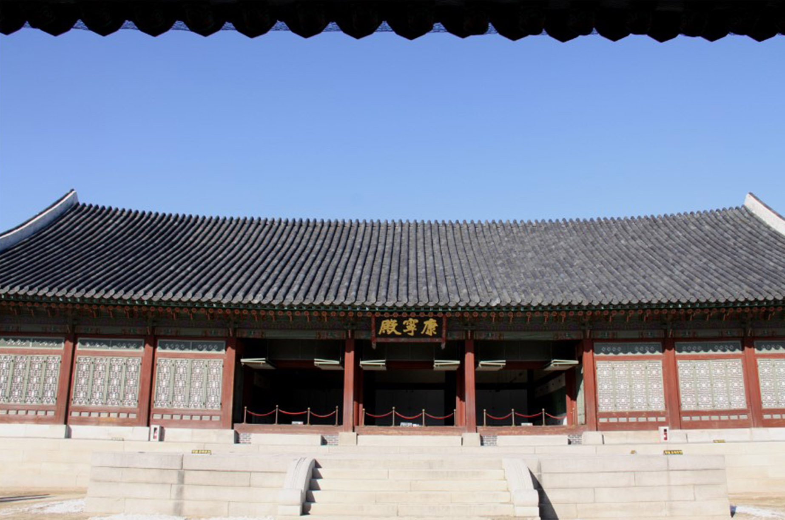
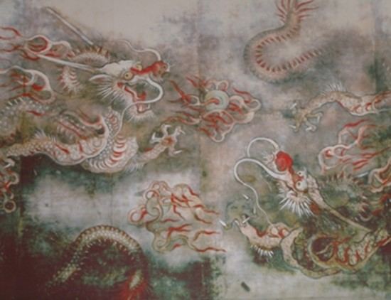
조선시대 임금의 편전으로 이용된
궁궐건물이자 보물을 말한다.
임진왜란때 소실되었다가
1867년 중건되었다.
2012년 3월 2일에 보물 제1759호로 지정되었다.
국왕이 정무를 수행하던 편전으로,
치조의 중요한 공간이었다.
경회루
[慶會樓]
Gyeonghoeru
조선후기 왕과 가족들의 휴식처로 이용된
궁궐건물. 누정. 보물
조선후기 왕과 가족들의 휴식처로 이용된
궁궐건물. 누정. 보물
향원정
[香遠亭]
Hyangwondjeong
조선후기 연회 장소로 이용된
궁궐건물. 누정. 국보.
조선후기 연회 장소로 이용된
궁궐건물. 누정. 국보.
오시는 길
Directions
지도
지하철
- 3호선 경복궁역 5번출구 도보 5분
- 5호선 광화문역 2번출구 도보 약 10분
경복궁 주소 및 연략처
- (우 : 03045) 서울특별시 종로구 사직로 161
- (02) 3700 - 3900-1
버스
- 경복궁 남측 : 109, 171, 272, 601, 606, 1020, 7025
- 경복궁 서측 : 1020, 1711, 7016, 7022, 7212, 6011, 9730
유의사항
- 주차장 운영시간 : 06: ~ 23:00
- 장애인주하장 : 지상주차장(9면)
경복궁 주차장은 하이파킹 주식회사에서 위탁 관리하는 경복궁 부설주차장입니다.
문의사항은 주차장관리사무소(070-7119-3123)로 연락주시기 바랍니다.